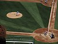

baseball

Definition: A baseball is a ball used in the sport of the same name. The ball consists of a rubber or cork center wrapped in yarn and covered with white natural horsehide or cowhide, or a synthetic composite leather. A regulation baseball is 9 to 9.25 inches (229 to 235 mm) in circumference i.e. 2.86 to 2.94 inches (73 to 75 mm) in diameter, with a weight of 5 to 5.25 ounces (0.142 to 0.149 kg).The leather cover is commonly formed from two saddle-shaped pieces stitched together, typically with red-dyed thread. There are 108 stitches on a regulation baseball. That stitching plays a significant role in the trajectory of a thrown baseball due to the drag caused by the interaction between the stitching and the air. Controlling the orientation of the stitches and the speed of the ball's rotation allows a pitcher to affect the behavior of the pitched ball in specific ways. Commonly employed pitches include the curveball, the slider, the two-seam fastball, the four-seam fastball, the sinker, the cutter and the changeup.
Source: Wikipedia
Wikipedia Page (Something wrong with this association? Let us know.)
Wikidata Page (Something wrong with this association? Let us know.)
Occurs in: